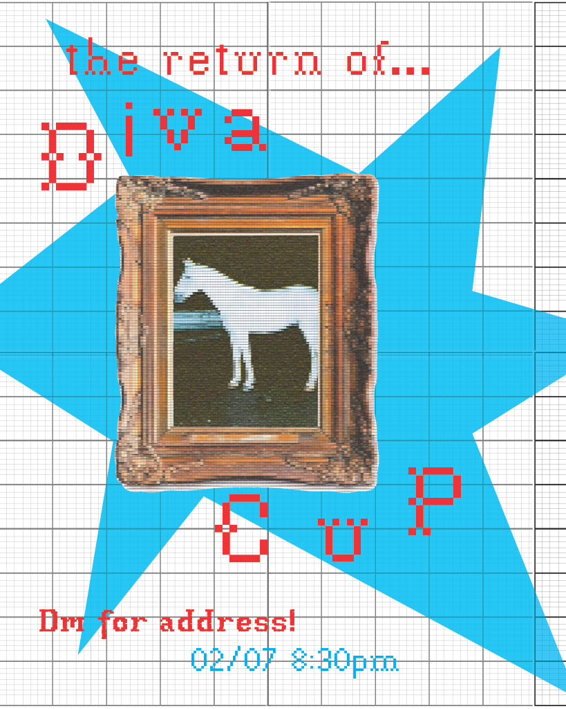
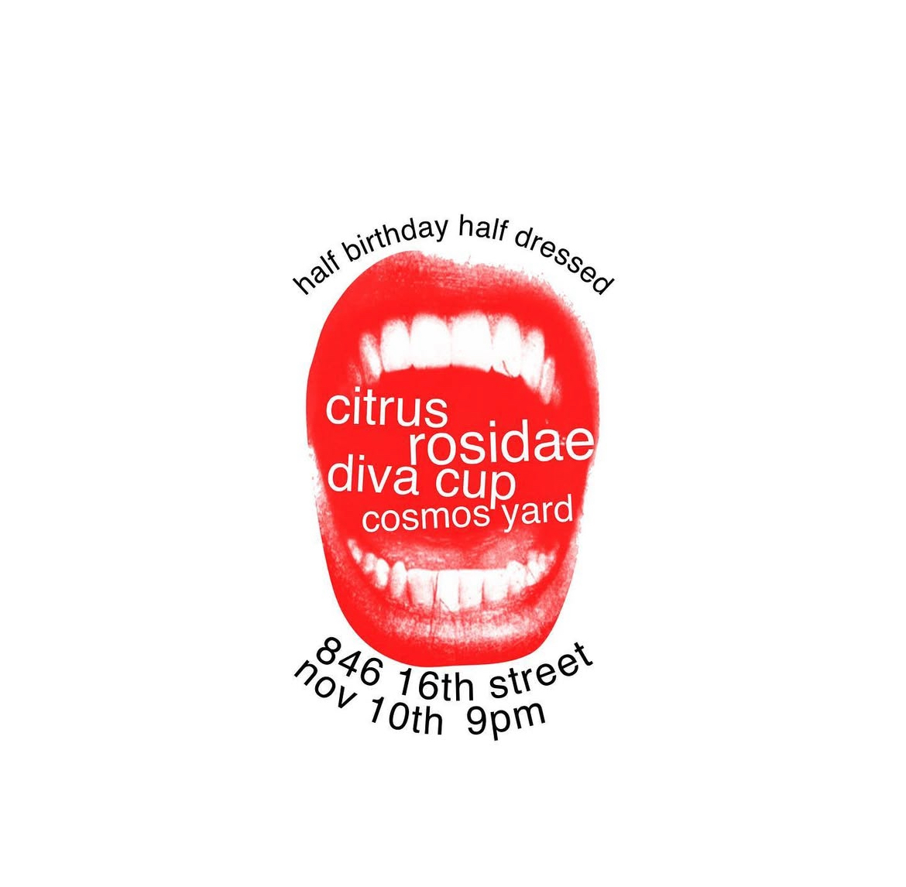
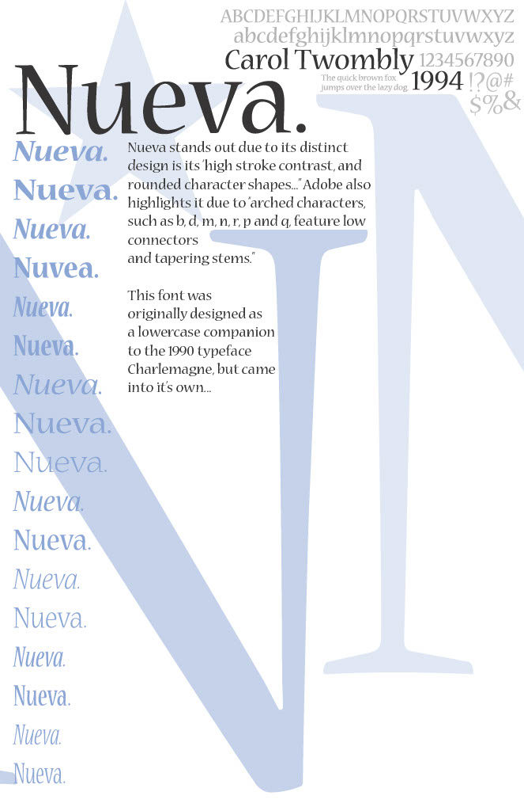
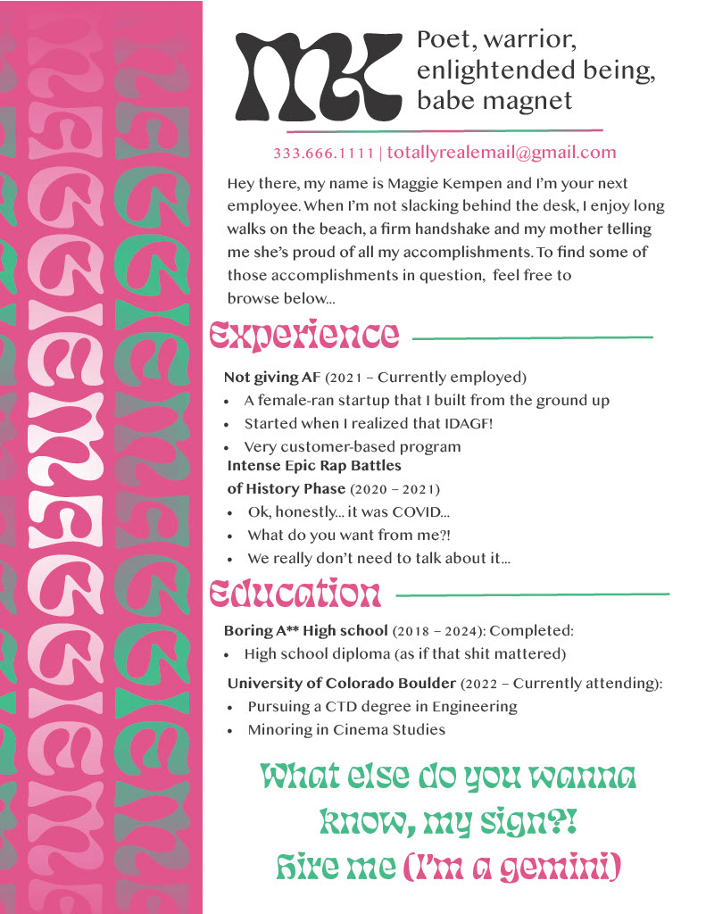

music video for the Diva Cup original song "Public Venmo Porn Girls". this was a collaborative filming process by Polly Torian, Maxx Goodman, Addy Harrison and myself.
edited by me using after effects & premire pro.
both of these you can find on my youtube, but i decided to put them again in my portfolio because i'm so proud. my time in berlin was really special, i made so many connections during my time there & lifelong friends. i spent a breif period in berlin, just from sept 2024 - early nov 2024, but i took fascinating classes on radio production & gender and media. i had never been to germany, so it was a very exciting time, but also an internal time of self reflection for me.
this film was a collaborative effort between me and maxx goodman & kaitlyn tran.
an abstract exploration of transportation to and from a night out, but our main character is being followed.
edited by me.
my theme of abroad was self exploration and this piece followed the idea that people leave holes in our memories.
i've hand selected the projects that i'm the most proud of during my time at CU Boulder.
posters i've made for many different occasions! more often than not, i end up designing posters for my band! i primarily use photoshop & illustrator.
   